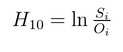
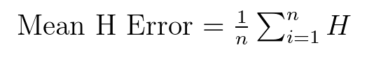

h10_mhe¶
-
hydrostats.HydroErr.h10_mhe(simulated_array, observed_array, replace_nan=None, replace_inf=None, remove_neg=False, remove_zero=False)[source]¶ Compute the H10 mean error.
 Range:
Notes:
Parameters: - simulated_array: one dimensional ndarray
An array of simulated data from the time series.
- observed_array: one dimensional ndarray
An array of observed data from the time series.
- replace_nan: float, optional
If given, indicates which value to replace NaN values with in the two arrays. If None, when a NaN value is found at the i-th position in the observed OR simulated array, the i-th value of the observed and simulated array are removed before the computation.
- replace_inf: float, optional
If given, indicates which value to replace Inf values with in the two arrays. If None, when an inf value is found at the i-th position in the observed OR simulated array, the i-th value of the observed and simulated array are removed before the computation.
- remove_neg: boolean, optional
If True, when a negative value is found at the i-th position in the observed OR simulated array, the i-th value of the observed AND simulated array are removed before the computation.
- remove_zero: boolean, optional
If true, when a zero value is found at the i-th position in the observed OR simulated array, the i-th value of the observed AND simulated array are removed before the computation.
Returns: - float
The mean H10 error.
References
- Tornquist, L., Vartia, P., Vartia, Y.O., 1985. How Should Relative Changes be Measured? The American Statistician 43-46.
Examples
>>> import hydrostats.HydroErr as he >>> import numpy as np
>>> sim = np.array([5, 7, 9, 2, 4.5, 6.7]) >>> obs = np.array([4.7, 6, 10, 2.5, 4, 7]) >>> he.h10_mhe(sim, obs) -0.0012578676058971154